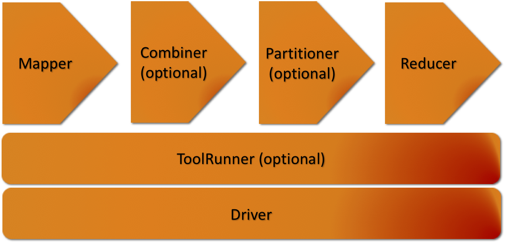
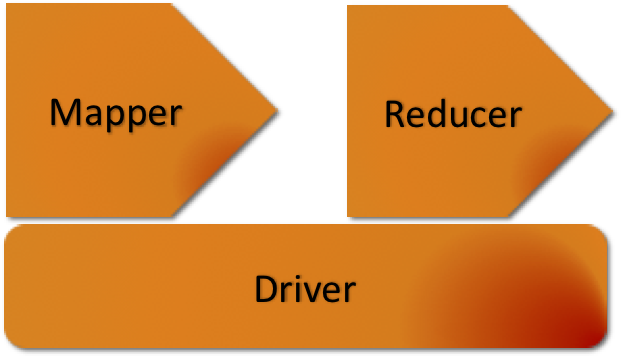

mapred streaming -input Input -output Output -mapper /bin/cat -reducer /usr/bin/wc
mapred streaming -input /user/words.txt -output /user/output -mapper /bin/cat -reducer /usr/bin/wc
word1 word2 word3
2 3 20
mapred streaming [genericOptions] [streamingOptions]
-conf configuration_file Specify an application configuration file -D property=value Use value for given property -fs host:port or local Specify a namenode -files Optional Specify comma-separated files to be copied to the Map/Reduce cluster -libjars Specify comma-separated jar files to include in the classpath -archives Specify comma-separated archives to be unarchived on the compute machines
-D mapreduce.job.reduces=0
-D mapreduce.job.reduces=2
-D stream.map.output.field.separator=. -D stream.num.map.output.key.fields=4
-input directoryname or filename Input location for mapper -output directoryname Required Output location for reducer -mapper executable or JavaClassName Mapper executable, default IdentityMapper -reducer executable or JavaClassName Reducer executable, default IdentityMapper -file filename Make the mapper, reducer, or combiner executable available locally -inputformat JavaClassName Class you supply should return key/value pairs of Text class -outputformat JavaClassName Class you supply should take key/value pairs of Text class -partitioner JavaClassName Class that determines which reduce a key is sent to -combiner streamingCommand or JavaClassName Combiner executable for map output -cmdenv name=value Pass environment variable to streaming commands -inputreader For backwards-compatibility: specifies a record reader class -verbose Verbose output -lazyOutput Create output lazily -numReduceTasks Specify the number of reducers -mapdebug Script to call when map task fails -reducedebug Script to call when reduce task fails
mapred streaming -input Input -output Output \
-inputformat org.apache.hadoop.mapred.KeyValueTextInputFormat \
-mapper org.apache.hadoop.mapred.lib.IdentityMapper \
-reducer /usr/bin/wc
mapred streaming -input Input -output Output \
-mapper myPythonScript.py \
-reducer /usr/bin/wc \
-file myPythonScript.py
-inputformat JavaClassName -outputformat JavaClassName -partitioner JavaClassName -combiner streamingCommand or JavaClassName
#!/usr/bin/env python3
import sys
for line in sys.stdin:
line = line.strip()
words = line.split()
for word in words:
print ('%s\t%s' % (word, 1))
#!/usr/bin/env python3
import sys
current_word = None
current_count = 0
word = None
for line in sys.stdin:
line = line.strip()
word, count = line.split('\t', 1)
try:
count = int(count)
except ValueError:
continue
if current_word == word:
current_count += count
else:
if current_word:
print ('%s\t%s' % (current_word, current_count))
current_count = count
current_word = word
if current_word == word:
print ('%s\t%s' % (current_word, current_count))
#!/usr/bin/env python3
import sys
def read_input(file):
for line in file:
yield line.split()
def main(separator='\t'):
data = read_input(sys.stdin)
for words in data:
for word in words:
print '%s%s%d' % (word, separator, 1)
if __name__ == "__main__":
main()
#!/usr/bin/env python3
from itertools import groupby
from operator import itemgetter
import sys
def read_mapper_output(file, separator='\t'):
for line in file:
yield line.rstrip().split(separator, 1)
def main(separator='\t'):
data = read_mapper_output(sys.stdin, separator=separator)
for current_word, group in groupby(data, itemgetter(0)):
try:
total_count = sum(int(count) for current_word, count in group)
print "%s%s%d" % (current_word, separator, total_count)
except ValueError:
pass
if __name__ == "__main__":
main()
mapred streaming -input /user/words.txt -output /user/output \
-mapper ./mapper.py -reducer ./reducer.py
$HADOOP_HOME/bin/hadoop jar $HADOOP_HOME/share/hadoop/tools/lib/hadoop-streaming-3.3.6.jar \
-input /user/numbers.txt -output /user/outputm \
-mapper ./filter.py -reducer ./reducer.py